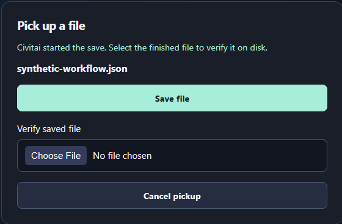

Live release · v0.2.0
Review SAFE Handoff.
Civitai approved v0.2.0 on November 26, 2026. Both Civitai catalogs point to the same App Block, and the served page matches the submitted ZIP byte for byte.
App screenshots
Captured from the packaged App Block in a real browser using synthetic files and the Civitai host fixture.




Verify the release
- Open the app in two browsers.Use Civitai.com and Civitai.red with a reachable direct network path.
- Send a small JSON or text fixture.Exchange the offer and reply in private chat. Verify the saved file and observe the receipt.
- Check both cutoff paths.Finish the last receipt and check closure. The browser regression suite also advances a test clock to the 24-hour deadline.
Release materials
The validation records identify the app build, fixture host, browser versions, byte limits and exact saved digests.
Platform permissions
The manifest requests zero account scopes. The App Block uses the native resource picker, the file save bridge, and the share or route hooks when the host provides them. Each user opens the app in a browser they already have.
GitHub Pages and the Wiki host project documentation and review materials. Live file transfers run in the Civitai app.